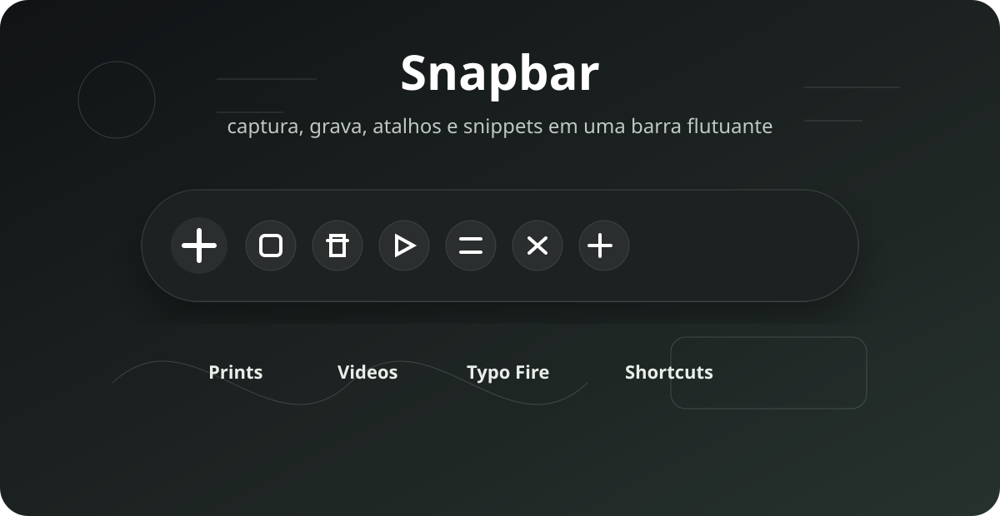

Native Windows snips.
Choose a folder and save a PNG without opening another app.
Open source · Windows 10 and 11
Capture, record, download, take notes, dictate, and expand text without opening five different apps.

Capture and recording are scattered. Snapbar puts screenshots and video in one compact bar.
Downloads need a separate tool. Paste a public link and save video or audio.
Repeated text is tiring. Typo Fire expands saved snippets without leaving your current field.
Made for ordinary PCs: no terminal, no Node, no separate FFmpeg, yt-dlp, Deno, or WebView2 install after setup.
Choose a folder and save a PNG without opening another app.
Microphone, system audio, or both—with FFmpeg included.
No browser cookies and no permanent link history.
Local notes, tasks, calendar, and a Pomodoro timer.
Speech stays with Windows Voice Typing.
Type a trigger and choose your saved text.
No account, sync service, or private server.
Windows x64
The Windows installer includes the runtime tools Snapbar needs, including WebView2, FFmpeg, yt-dlp, and Deno.
No. The packaged app includes what it needs; developers only need those tools to build Snapbar from source.
No. Snapbar works locally, with no login or cloud sync.
No. Screenshots, videos, notes, snippets, and downloads are not sent to a Snapbar server.
Voice typing uses Windows Voice Typing; downloads require a supported public source and an internet connection; recording depends on available display and audio devices.